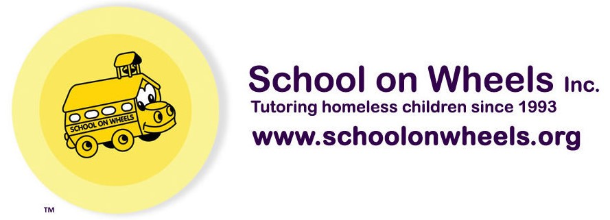

The Charity

Schools on Wheels
Dedicated to providing education to homeless children
In California
1 in every 20 children, does not have a home.
Homeless children are
Nine times more likely to repeat a grade
Over the past 30 years
Schools on Wheels has served more than 50,000 students!
Homeless children are
Four times as likely to drop out of school entirely.
Schools on Wheels provides
Free tutoring and mentoring to children from kindergarten through twelfth grade living in shelters, motels, vehicles, group foster homes, or the streets.
Homeless children are
Three times more likely to be placed in special education programs.